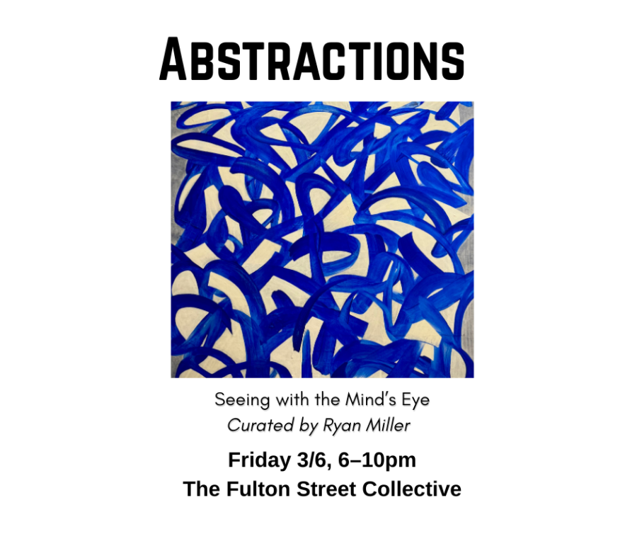

ABSTRACTIONS Seeing With The Mind’s Eye
Fulton Street Collective, in collaboration with West Town Chamber of Commerce, presents ABSTRACTIONS Seeing With The Mind’s Eye Art Opening on Friday March 6th, from 6-10pm.
Curated by Ryan Miller
How does an artist draw an emotion, or paint a sound? Join us on Friday, March 6 as The Fulton Street Collective presents “Abstractions: Seeing with the Mind’s Eye.” This group art show will feature abstract art that expresses things beyond which the eye can see.
To ensure the organic growth of West Town as Chicago’s emergent gallery district and further unite the neighborhood as a cultural destination, please join us in our gallery on the first Friday of every month for a collaborative art opening.
West Town Chamber of Commerce supports and elevates similar efforts while further facilitating connection among Chicago’s gallerists, artists, collectors and patrons.With enthusiastic participation from area galleries, First Fridays offers the potential to ensure the continued development of the West Town neighborhood as a nexus of fine art and arts development in Chicago and beyond.
RESERVATIONS RECOMMENDED: https://www.eventbrite.com/e/1983733662786
Fulton Street Collective
1821 W. Hubbard